Два дотики
Сума на клавіатурі, категорія на кнопці поруч — і готово.
Швидкий облік витрат для iPhone, iPad і Apple Watch, що зберігає все на пристрої.
Безплатно. Без облікового запису. Без трекерів.
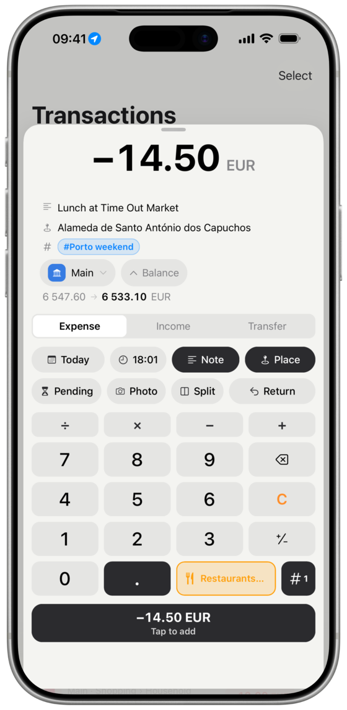
Мене страшенно дратувало, що я не знаю, як у мене з грошима, тож понад десять років тому я почав записувати кожну витрату. Перший застосунок, яким я користувався, на початку був безплатним, а згодом став разовою покупкою — і це було чесно. Звичка закріпилася, але справжнього розуміння, куди насправді йдуть мої гроші, той застосунок так і не дав.
Останні два роки я користувався застосунком для бюджету, який як разова покупка коштував чималенько. Розробник замовк щодо відомих помилок, а «нативний» застосунок для iOS став болісно повільним: я чекав пару секунд, перш ніж міг ввести бодай одну цифру. Останньою краплею став застосунок для Apple Watch, який просто перестав працювати. Пояснення було «Apple», хоча все інше на годиннику працювало справно. Це була не Apple.
Я багато років працюю розробником на React Native і випускаю застосунки, якими щодня користуються реальні люди. І давно хотів віддати щось спільноті відкритого коду та розвʼязати цю одну проблему: безплатний локальний застосунок для обліку грошей, який справді хороший і яким приємно користуватися. Нарешті зʼявилася причина.
Я задоволений тим, що вийшло. Сама лише автоматизація через Швидкі команди прибирає майже всі незручності, які в мене були, а теги разом із категоріями здаються настільки очевидними, що я досі дивуюся, чому ніхто так не зробив. Я робив це дбайливо і збираюся й далі про нього піклуватися.
Ваші дані — ваші, тож якщо мене колись зібʼє автобус, ви за хвилину зможете перенести їх куди завгодно. Я цього не планую: у мене скоро народиться донька Олівія, і мені є заради чого жити.
Дякую, що спробували Копійку.
Сума на клавіатурі, категорія на кнопці поруч — і готово.
Усе на запʼясті, а телефон лишається в кишені.
Той самий застосунок на більшому екрані, синхронний з вашим iPhone через iCloud.
Зарплата 25-го? Ваш бюджетний місяць триває з 25-го по 24-те.
Магазин, який ви вже колись записали, наступного разу запишеться сам.
Вечеря і лампа з одного магазину — кожне у своїй категорії.
Підписки записуються самі або чекають на списання з банку; рахунки, що змінюються, чекають на ваш дотик.
Окремий бюджет на кожну подорож і денний ліміт, окремо від бюджетів місяця.
Хто кому винен, із нагадуванням у день повернення.
Можна витратити, днів до зарплати, ціль заощаджень — вибирайте самі.
Два запитання позначають, без чого ви не можете жити і від чого могли б відмовитися хоч завтра.
Автоматизація у Швидких командах читає сповіщення про платіж — на вашому телефоні.
На ваших пристроях, з резервною копією у вашому iCloud, з експортом будь-коли.
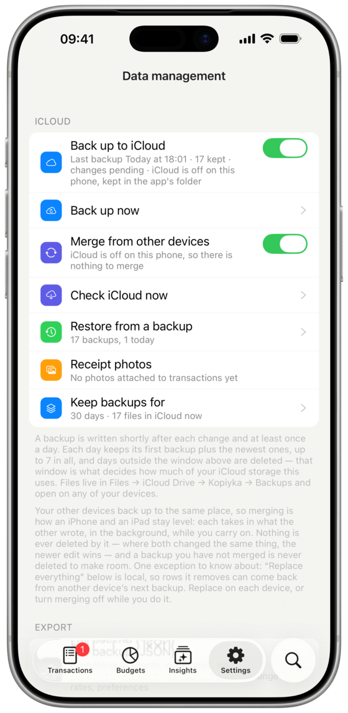
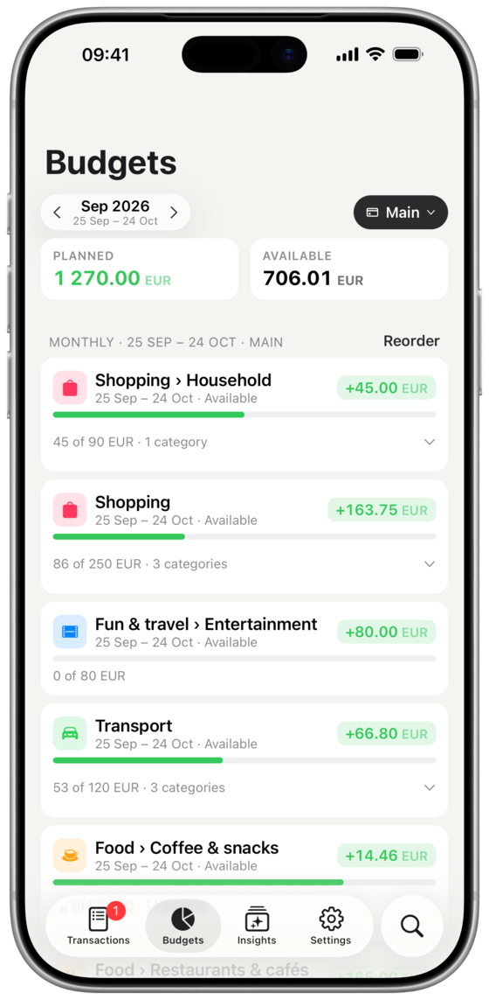
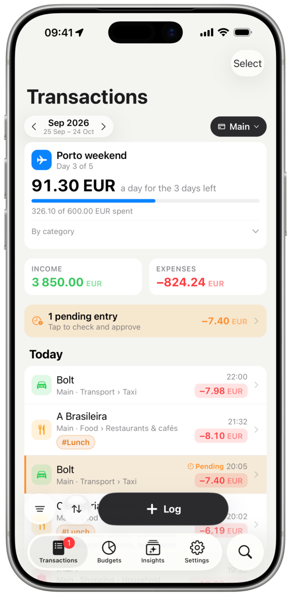
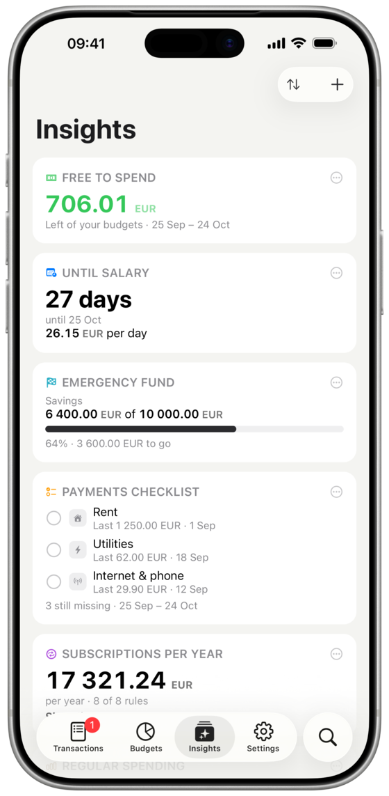
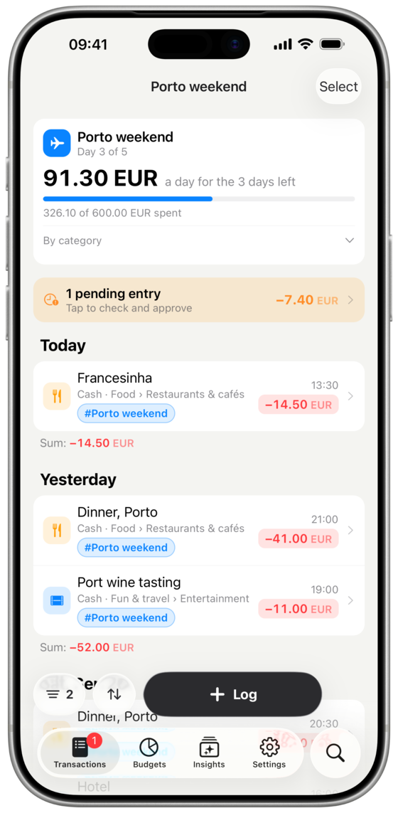
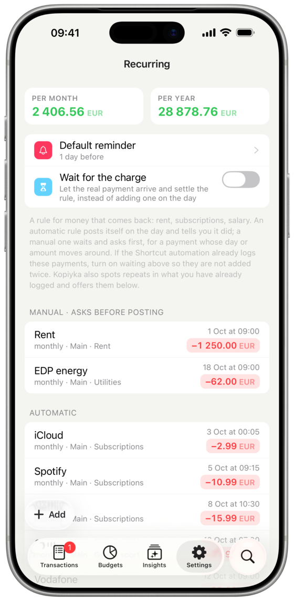
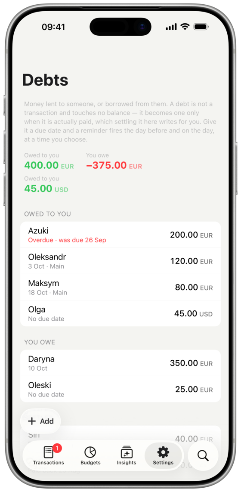
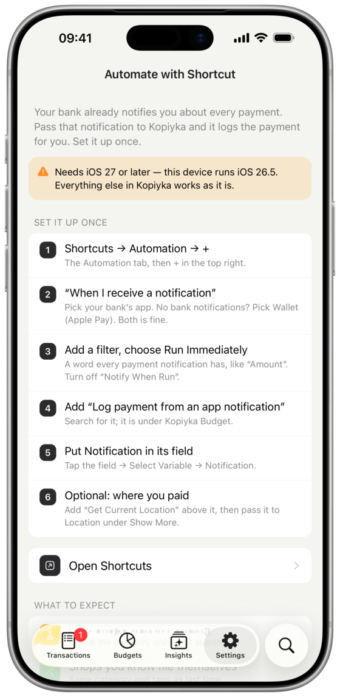
Усе відбувається на годиннику — сума, категорія, теги, — а сьогоднішні записи та ваші бюджети за один свайп. Для циферблата є ускладнення, а на Ultra його можна призначити на кнопку дії.
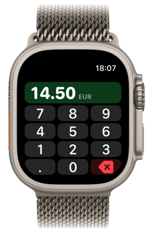
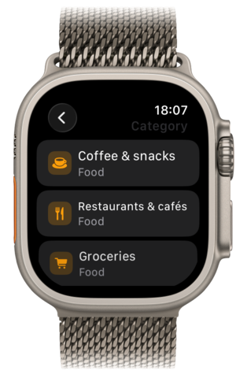
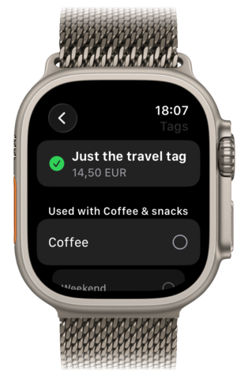
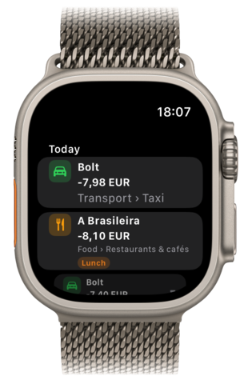
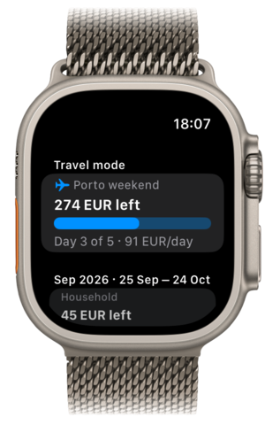
Той самий застосунок — колонкою посередині екрана, а не розтягнутим на всю ширину телефоном, — і він працює в Split View. Увімкніть обʼєднання, і ваші iPhone та iPad синхронізуватимуться через ваш власний iCloud: воно нічого не видаляє, а там, де обидва пристрої змінили те саме, перемагає новіша зміна.
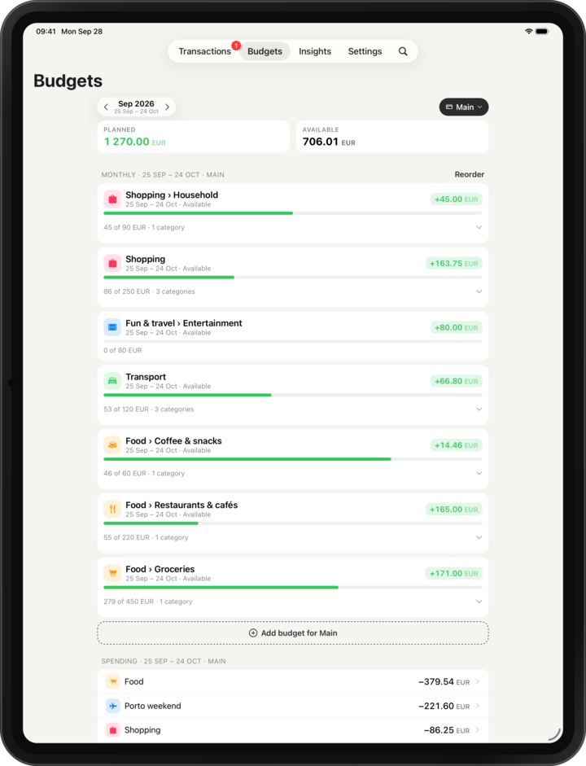
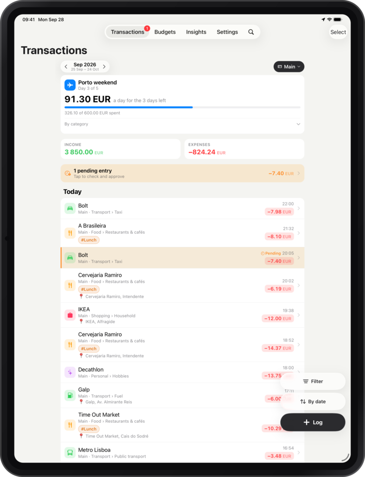
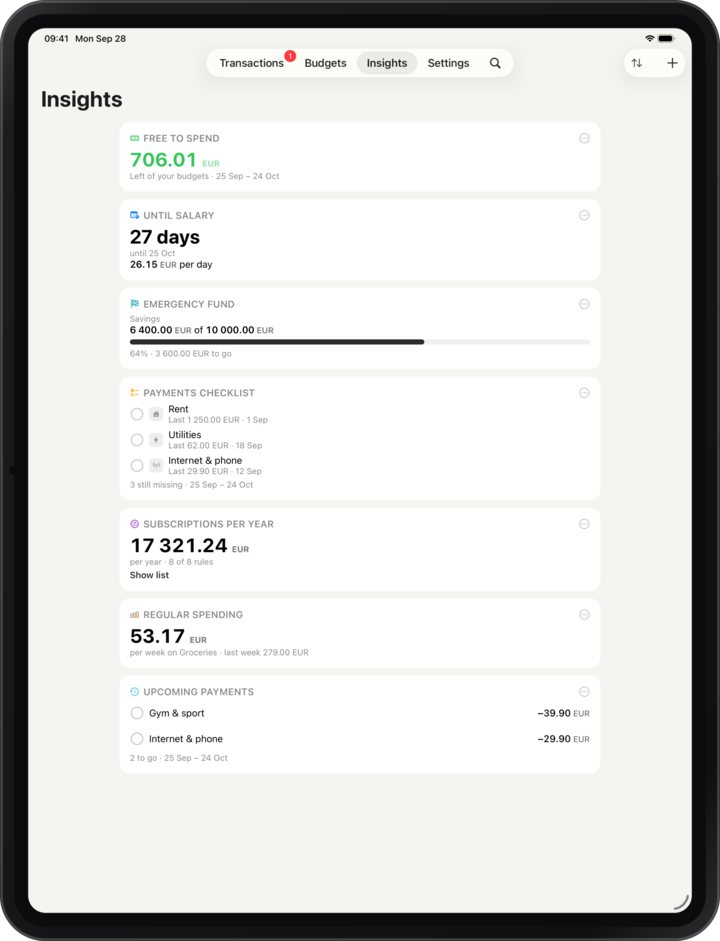
Власна тема застосунку, «Графіт», і ще сім тем із редакторів коду, які ви знаєте, — Соларайзд, Катпучин, Ґрувбокс, Норд, Токіо Найт, Розе Пайн і ГітХаб. Кожна має світлий і темний варіант, підлаштовується під оформлення телефона або тримається одного, і має іконку застосунку до пари.
Натисніть на будь-яку, щоб приміряти її на цій сторінці.
Палітри за мотивами Solarized, Catppuccin, Gruvbox, Nord, Tokyo Night, Rosé Pine і GitHub Primer — усі за ліцензією MIT. Дякуємо їхнім авторам.
Копійка нічого не збирає: немає ні облікового запису, ні сервера, куди щось можна було б надіслати. Єдиний запит, який вона робить, — курс валют від Європейського центрального банку.
Експортуйте дані зі старого застосунку, передайте файл і готовий запит ШІ-асистентові й імпортуйте результат.
Ліцензія MIT, зроблено на React Native і трохи на Swift; пул-реквести вітаються. Android поки не планується, але, можливо, згодом.
Напишіть мені, і я її виправлю. Якщо застосунок повівся дивно, у «Налаштування → Діагностика» є звіт про збій, який варто додати.